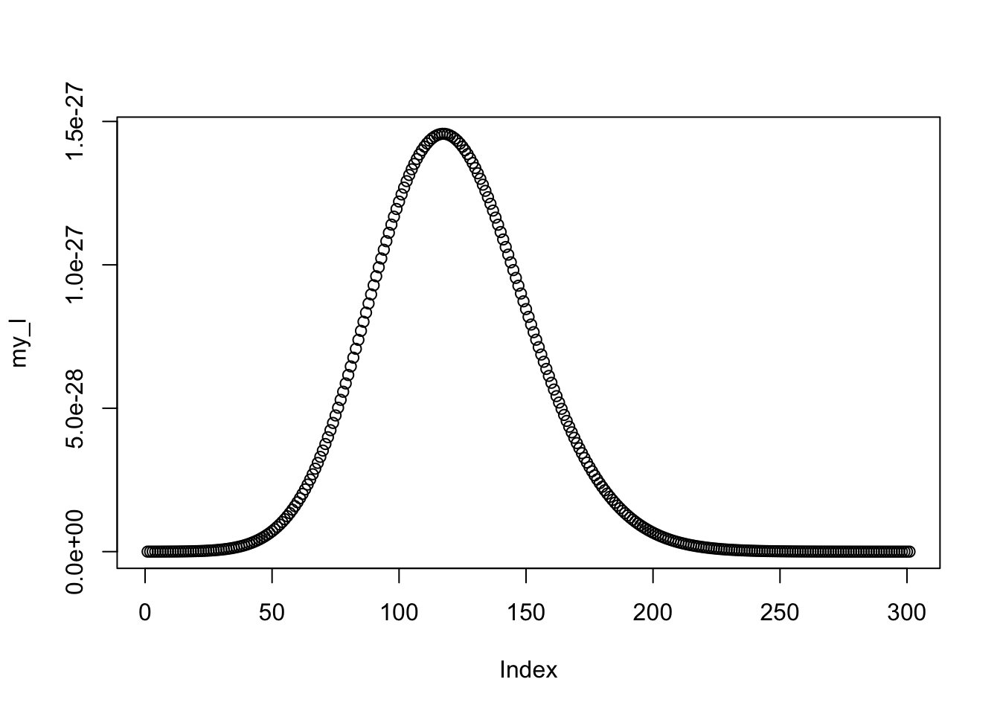
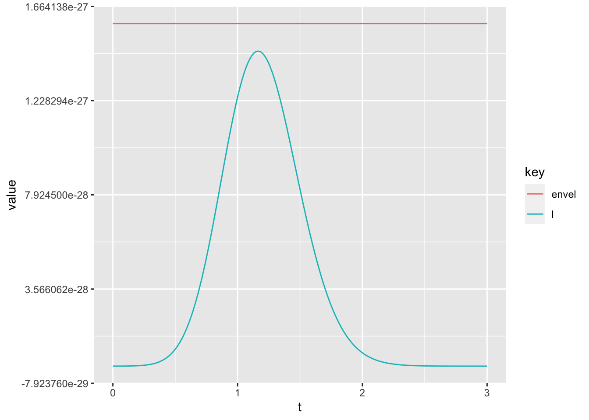

Chapter 17 Bayesian inference
This chapter deals with Bayesian inference.
The students are expected to acquire the following knowledge:
- How to set prior distribution.
- Compute posterior distribution.
- Compute posterior predictive distribution.
- Use sampling for inference.
17.1 Conjugate priors
Exercise 17.1 (Poisson-gamma model) Let us assume a Poisson likelihood and a gamma prior on the Poisson mean parameter (this is a conjugate prior).
- Derive posterior
- Below we have some data, which represents number of goals in a football match. Choose sensible prior for this data (draw the gamma density if necessary), justify it. Compute the posterior. Compute an interval such that the probability that the true mean is in there is 95%. What is the probability that the true mean is greater than 2.5?
- Back to theory: Compute prior predictive and posterior predictive. Discuss why the posterior predictive is overdispersed and not Poisson?
- Draw a histogram of the prior predictive and posterior predictive for the data from (b). Discuss.
- Generate 10 and 100 random samples from a Poisson distribution and compare the posteriors with a flat prior, and a prior concentrated away from the truth.
Solution.
\[\begin{align*} p(\lambda | X) &= \frac{p(X | \lambda) p(\lambda)}{\int_0^\infty p(X | \lambda) p(\lambda) d\lambda} \\ &\propto p(X | \lambda) p(\lambda) \\ &= \Big(\prod_{i=1}^n \frac{1}{x_i!} \lambda^{x_i} e^{-\lambda}\Big) \frac{\beta^\alpha}{\Gamma(\alpha)} \lambda^{\alpha - 1} e^{-\beta \lambda} \\ &\propto \lambda^{\sum_{i=1}^n x_i + \alpha - 1} e^{- \lambda (n + \beta)} \\ \end{align*}\] We recognize this as the shape of a gamma distribution, therefore \[\begin{align*} \lambda | X \sim \text{gamma}(\alpha + \sum_{i=1}^n x_i, \beta + n) \end{align*}\]
For the prior predictive, we have \[\begin{align*} p(x^*) &= \int_0^\infty p(x^*, \lambda) d\lambda \\ &= \int_0^\infty p(x^* | \lambda) p(\lambda) d\lambda \\ &= \int_0^\infty \frac{1}{x^*!} \lambda^{x^*} e^{-\lambda} \frac{\beta^\alpha}{\Gamma(\alpha)} \lambda^{\alpha - 1} e^{-\beta \lambda} d\lambda \\ &= \frac{\beta^\alpha}{\Gamma(x^* + 1)\Gamma(\alpha)} \int_0^\infty \lambda^{x^* + \alpha - 1} e^{-\lambda (1 + \beta)} d\lambda \\ &= \frac{\beta^\alpha}{\Gamma(x^* + 1)\Gamma(\alpha)} \frac{\Gamma(x^* + \alpha)}{(1 + \beta)^{x^* + \alpha}} \int_0^\infty \frac{(1 + \beta)^{x^* + \alpha}}{\Gamma(x^* + \alpha)} \lambda^{x^* + \alpha - 1} e^{-\lambda (1 + \beta)} d\lambda \\ &= \frac{\beta^\alpha}{\Gamma(x^* + 1)\Gamma(\alpha)} \frac{\Gamma(x^* + \alpha)}{(1 + \beta)^{x^* + \alpha}} \\ &= \frac{\Gamma(x^* + \alpha)}{\Gamma(x^* + 1)\Gamma(\alpha)} (\frac{\beta}{1 + \beta})^\alpha (\frac{1}{1 + \beta})^{x^*}, \end{align*}\] which we recognize as the negative binomial distribution with \(r = \alpha\) and \(p = \frac{1}{\beta + 1}\). For the posterior predictive, the calculation is the same, only now the parameters are \(r = \alpha + \sum_{i=1}^n x_i\) and \(p = \frac{1}{\beta + n + 1}\). There are two sources of uncertainty in the predictive distribution. First is the uncertainty about the population. Second is the variability in sampling from the population. When \(n\) is large, the latter is going to be very small. But when \(n\) is small, the latter is going to be higher, resulting in an overdispersed predictive distribution.
x <- c(3, 2, 1, 1, 5, 4, 0, 0, 4, 3)
# b
# quick visual check of the prior
ggplot(data = data.frame(x = seq(0, 5, by = 0.01)), aes(x = x)) +
stat_function(fun = dgamma, args = list(shape = 1, rate = 1))palpha <- 1
pbeta <- 1
alpha_post <- palpha + sum(x)
beta_post <- pbeta + length(x)
ggplot(data = data.frame(x = seq(0, 5, by = 0.01)), aes(x = x)) +
stat_function(fun = dgamma, args = list(shape = alpha_post, rate = beta_post))## [1] 0.2267148## [1] 1.397932 3.137390# d
prior_pred <- rnbinom(1000, size = palpha, prob = 1 - 1 / (pbeta + 1))
post_pred <- rnbinom(1000, size = palpha + sum(x), prob = 1 - 1 / (pbeta + 10 + 1))
df <- data.frame(prior = prior_pred, posterior = post_pred)
df <- gather(df)
ggplot(df, aes(x = value, fill = key)) +
geom_histogram(position = "dodge")# e
set.seed(1)
x1 <- rpois(10, 2.5)
x2 <- rpois(100, 2.5)
alpha_flat <- 1
beta_flat <- 0.1
alpha_conc <- 50
beta_conc <- 10
n <- 10000
df_flat <- data.frame(x1 = rgamma(n, alpha_flat + sum(x1), beta_flat + 10),
x2 = rgamma(n, alpha_flat + sum(x2), beta_flat + 100),
type = "flat")
df_flat <- tidyr::gather(df_flat, key = "key", value = "value", - type)
df_conc <- data.frame(x1 = rgamma(n, alpha_conc + sum(x1), beta_conc + 10),
x2 = rgamma(n, alpha_conc + sum(x2), beta_conc + 100),
type = "conc")
df_conc <- tidyr::gather(df_conc, key = "key", value = "value", - type)
df <- rbind(df_flat, df_conc)
ggplot(data = df, aes(x = value, color = type)) +
facet_wrap(~ key) +
geom_density()17.2 Posterior sampling
Exercise 17.2 (Bayesian logistic regression) In Chapter 15 we implemented a MLE for logistic regression (see the code below). For this model, conjugate priors do not exist, which complicates the calculation of the posterior. However, we can use sampling from the numerator of the posterior, using rejection sampling.
- Set a sensible prior distribution on \(\beta\) and use rejection sampling to find the posterior distribution.
- In a) you will get a distribution of parameter \(\beta\). Plot the probabilities (as in exercise 15.3) for each sample of \(\beta\) and compare to the truth.
Hint: We can use rejection sampling even for functions which are not PDFs – they do not have to sum/integrate to 1. We just need to use a suitable envelope that we know how to sample from. For example, here we could use a uniform distribution and scale it suitably.
set.seed(1)
inv_log <- function (z) {
return (1 / (1 + exp(-z)))
}
x <- rnorm(100)
y <- x
y <- rbinom(100, size = 1, prob = inv_log(1.2 * x))
l_logistic <- function (beta, X, y) {
logl <- -sum(y * log(inv_log(as.vector(beta %*% X))) + (1 - y) * log((1 - inv_log(as.vector(beta %*% X)))))
return(logl)
}
my_optim <- optim(par = 0.5, fn = l_logistic, method = "L-BFGS-B",
lower = 0, upper = 10, X = x, y = y)
my_optim$par# Let's say we believe that the mean of beta is 0.5. Since we are not very sure
# about this, we will give it a relatively high variance. So a normal prior with
# mean 0.5 and standard deviation 5. But there is no right solution to this,
# this is basically us expressing our prior belief in the parameter values.
set.seed(1)
inv_log <- function (z) {
return (1 / (1 + exp(-z)))
}
x <- rnorm(100)
y <- x
y <- rbinom(100, size = 1, prob = inv_log(1.2 * x))
l_logistic <- function (beta, X, y) {
logl <- -sum(y * log(inv_log(as.vector(beta %*% X))) + (1 - y) * log((1 - inv_log(as.vector(beta %*% X)))))
if (is.nan(logl)) logl <- Inf
return(logl)
}
my_optim <- optim(par = 0.5, fn = l_logistic, method = "L-BFGS-B",
lower = 0, upper = 10, X = x, y = y)
my_optim$par## [1] 1.166558f_logistic <- function (beta, X, y) {
logl <- prod(inv_log(as.vector(beta %*% X))^y * (1 - inv_log(as.vector(beta %*% X)))^(1 - y))
return(logl)
}
a <- seq(0, 3, by = 0.01)
my_l <- c()
for (i in a) {
my_l <- c(my_l, f_logistic(i, x, y) * dnorm(i, 0.5, 5))
}
plot(my_l)
envlp <- 10^(-25.8) * dunif(a, -5, 5) # found by trial and error
tmp <- data.frame(envel = envlp, l = my_l, t = a)
tmp <- gather(tmp, key = "key", value = "value", - t)
ggplot(tmp, aes(x = t, y = value, color = key)) +
geom_line() # envelope OK
set.seed(1)
nsamps <- 1000
samps <- c()
for (i in 1:nsamps) {
tmp <- runif(1, -5, 5)
u <- runif(1, 0, 1)
if (u < (f_logistic(tmp, x, y) * dnorm(tmp, 0.5, 5)) /
(10^(-25.8) * dunif(tmp, -5, 5))) {
samps <- c(samps, tmp)
}
}
plot(density(samps))## [1] 1.211578## [1] 1.204279truth_p <- data.frame(x = x, prob = inv_log(1.2 * x), type = "truth")
preds <- inv_log(x %*% t(samps))
preds <- gather(cbind(as.data.frame(preds), x = x), key = "key",
"value" = value, - x)
ggplot(preds, aes(x = x, y = value)) +
geom_line(aes(group = key), color = "gray", alpha = 0.7) +
geom_point(data = truth_p, aes(y = prob), color = "red", alpha = 0.7) +
theme_bw()